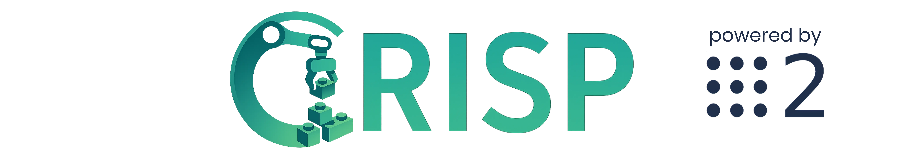

CRISP - Compliant ROS2 Controllers for Learning-Based Manipulation Policies
Authors: Daniel San Jose Pro, Oliver Hausdörfer, Ralf Römer, Maximilian Dösch, Martin Schuck and Angela Schöllig.
A collection of real-time, C++ controllers for compliant torque-based control for manipulators compatible with
ros2_control. Developed for deploying high-level learning-based policies (VLA, Diffusion, ...) and teleoperation on your manipulator. It is compatible with any manipulator offering and effort interface.
If you use this work, please cite it using the bibtex below.
Check the controllers (CRISP controllers) , robot demos (CRISP controllers demos) , a simple python interface (CRISP_PY) , and a Gymnasium wrapper (CRISP_GYM) for real-world experiments.
| Robot teleoperated using a Follower-Leader system in CRISP GYM | Diffusion Policy trained and deployed from the same demonstrations. |
| Robot following a moving target, while base joint follows a sine curve. | Simulated kinova robot with continous joints and nullspace control | Simulated iiwa robot |
 |
|
|---|---|
| Real robot following a target and being disturbed (contact) + null space control demonstration | Demonstration using a cartesian controller teleoperated using Vicon tracking system (Speed x4) |
| Teleoperation setup with activated force-torque feedback. |
Why?
Learning-based controllers, such as diffusion policies, deep reinforcement learning, and vision-action-models in general, typically output low-frequency or sporadic target poses, necessitating a low-level controller to track these references smoothly, especially in contact-rich environments.
While ROS2 frameworks like MoveIt offer comprehensive motion planning capabilities, they are often unnecessarily complex for tasks requiring simple, real-time pose or joint servoing.
We present a set of lightweight, torque-based Cartesian and joint-space controllers implemented in C++ for ros2_control, compatible with any robot exposing an effort interface—a common standard among modern manipulators.
Our controllers incorporate friction compensation, joint limit avoidance, and error clipping, and have been validated on the Franka Robotics FR3 on hardware, and on various platforms in simulation.
Designed for fast integration and real-time control, our implementation lowers the barrier to deploying learning-based algorithms on ROS2-compatible platforms.
Why the name "CRISP"? "CRISP" reflects our design philosophy behind the package: a concise, to-the-point implementation for easy deployment and integration in other software stacks.
Features
- üêç Python interface to move your ROS2 robot around without having to think about topics, spinning, and more ROS2 concepts but without loosing the powerful ROS2 API. Check CRISP_PY for more information and examples.
- üîÅ Gymnasium environment with utilities to deploy learning-based policies and record trajectories in LeRobotFormat. Check CRISP_GYM.
- ❓ Demos showcasing how to use the controller with FR3 of Franka Emika in single and bimanual setup. Check the crisp_controller_demos.
- ⚙️ Dynamically and highly parametrizable: powered by the
generate_parameter_libraryyou can modify stiffness and more during operation. - ü§ñ Operational Space Controller as well as Cartesian Impedance Controller for torque-based control.
- üö´ No MoveIt or complicated path-planning, just a simple C++
ros2_controller. Ready to use.